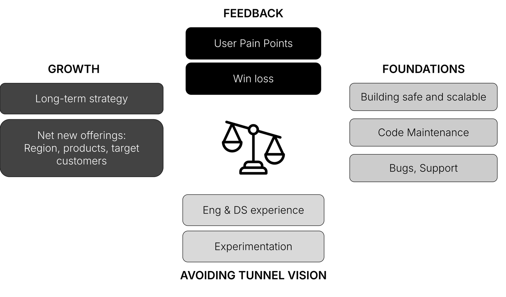
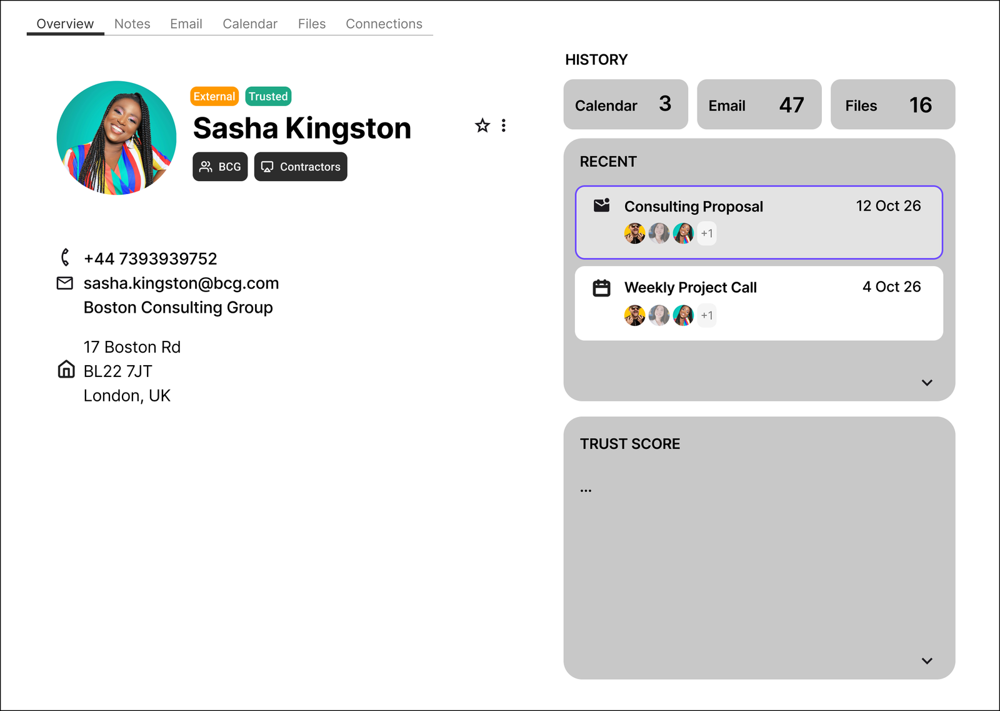

1 / Market
Legacy organisations dominate the workspace suites on the market, with Google Workspace & Microsoft 365 holding the majority of the market share. They are proven to be deeply integrated into their customers daily workflow, due to a combined offering of mail, document, hosting, directory and security services.
Proton, growing to an internationally respected player in the emailspace, has a long standing reputation of respecting user privacy. As their suite has expanded (Mail, Calendar, Drive, Docs, Sheets, Meet, Pass and VPN etc.) a transition into the B2B SaaS space is a natural result.
Oligopolies in which a few players control the market, can be difficult to enter. However, when being selective on which market share and which user needs to target, it is not uncommon to disrupt the market share. For larger customers, considerations must be made of the cost of switching providers, making it often more reasonable to operate as an integrated solution, winning through differentiation.
The opportunity arises especially in markets in which market leading companies:
- Neglect their primary focus on customer experience
- Compromised trust or otherwise reputational harm
- Exploit their market position through excessive price increases or changes in terms of service
An example of an ongoing challenged product is JIRA (Atlassian) vs Linear for software engineering. Whilst at USD 6.5 billion revenue, Linear has grown into a strong position in the SMB, recently passing USD100 million ARR, and doubled its evaluation from 2025 to 2026 (USD 2.5 billion). Whilst Atlassian is still holding the majority of the market share, it is difficult to tell whether system dependencies and cost of vendor switching are responsible for their enterprise retention.
Building for B2C only can limit the amount of consideration needed to be made to serve a great product. For a workspace suite, B2B must not only consider the product performance and user experience, but consider the overarching organisation.
| END USER | ORGANISATION |
|---|---|
| Experience & UX | Provisioning (On/Offboarding) |
| Performance & Reliability | Integrations & Administration |
| Protection & Trust | Security / Data Policy Enforcement |
| Hosting, Performance & Disaster Recovery | |
| SAMPLE METRICS | SAMPLE METRICS |
| Adoption & Usage | Time saved (orchestration & sync) |
| Uptime & monitoring | SecOps incidents resolved |
| Reliability (Outage = Revenue lost) |
2 / Context and assumptions
| VALUE | FEATURES |
|---|---|
| Import |
|
| Flexible data | Email, phone, postal addresses, birthday, notes, organisation, title, role, member, URL, anniversary, gender, language, time zone, photo and logo. |
| Security | Contact field encryption |
| Groups |
|
| API | Contacts API (no groups) |
- Most customers are small and mid-sized, so every feature must be useful at 20 seats and still work at 10,000.
- Customers will not accept Proton using their data to train or improve models. Customers may accept basic extraction upon decryption, but no long term storage of full text.
- Contact data stays zero-access encrypted; any intelligence runs on the device or through Lumo's no-logs processing.
- Internal and external contacts are treated the same. Impersonation mostly comes from outside, so external contacts are in scope for this feature.
- No AI-written emails or messages.
- No training on customer data, and no sharing of contact data with third parties.
- No inferred profiling of people, such as expertise or relationship scores across the organisation.
- No fetching or scraping of third-party profiles such as LinkedIn.
3 / Scope
| USAGE ACROSS ENTIRE SUITE | STANDALONE HUB |
|---|---|
|
|
Expected in any business suite and considered, but not where Proton wins:
- Organisation directory that fills itself from the admin panel
- Groups usable in every app, including groups that update themselves
- Admin control over which directory fields colleagues can see
- Org chart, presence and HR system sync
- Phone and desktop sync (CardDAV)
- Policy-based sharing guardrails and information barriers
- CRM integrations
- HR system sync and org chart
- AI-generated content of any kind
- An organisation-wide relationship graph
4 / Prioritisation
| PROBLEM (EXAMPLES) | IMPACTED | APPS | IMPACT | DIFFERENTIATION |
|---|---|---|---|---|
| Context is scattered across apps and addresses | EMPLOYEE | Mail, Drive, Calendar, Pass | MEDIUM | HIGH |
| Can't tell a long-standing contact from a first-time sender | EMPLOYEE | Mail, invites, shares | HIGH | HIGH |
| Senders impersonating real contacts | EMPLOYEEADMIN | Mail, Calendar invites, Drive shares | VERY HIGH | HIGH |
| Outbound mistakes: wrong recipient, sharing too widely | EMPLOYEEADMIN | Mail, Drive | HIGH | MEDIUM |
| Stale contacts | EMPLOYEE | Contacts, autocomplete | LOW | LOW |
| HORIZON | FEATURES | WHY THEN |
|---|---|---|
| Now (MVP) | Trusted Contacts (list, contact view, trust signals, suggested contacts) | Highest impact; the foundation everything else builds on |
| Next | Protection (impersonation and misdirection warnings); expired address check; secure reach indicator; organisation directory and groups in every app | Builds on contact data; closes parity gaps |
| Next (Premium) | Company/Contact briefing from Lumo; contact details suggested from email signatures | Private AI on top of Lumo; a reason to upgrade |
| Later | Sharing guardrails and information barriers inherited from Google or Microsoft; network graph; org chart; HR system sync; CardDAV | Needs admin policy; most valuable for larger organisations |
| Vision | Contact cards owned by the person; CRM integration (Salesforce, HubSpot) | Needs both sides on Proton; strict data controls |
5 / Visuals

